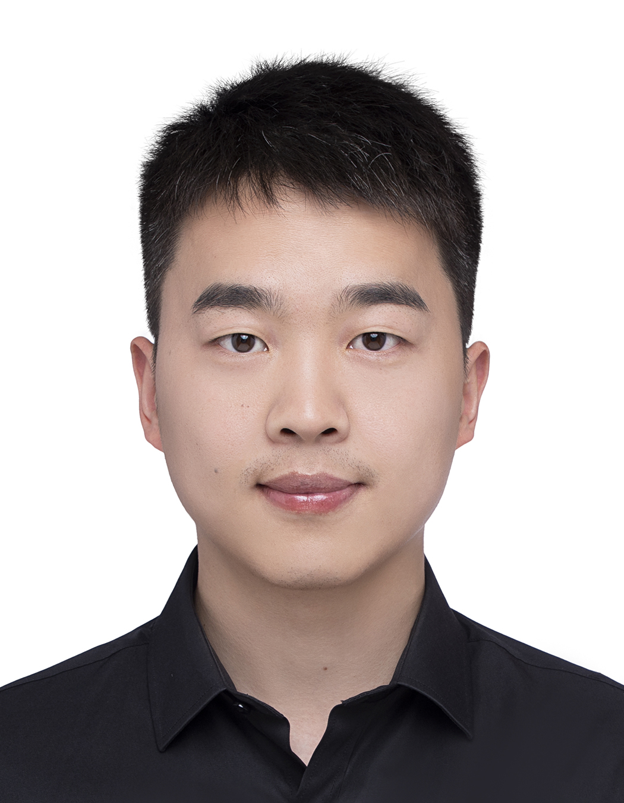

刘鹏飞 (Pengfei Liu)

电话 / Phone: +49 17644544310
邮箱 / Email:
liupengfei50@live.com
pengfei.liu@tuebingen.mpg.de
教育背景 / Education
博士在读 / Ph.D. in Biology
Max Planck Institute for Biology Tübingen, Tübingen, Germany
2021年一月 - 至今 / January 2021 - Present
硕士 / M. Sc. in Marine Biology
上海海洋大学 / Shanghai Ocean University, Shanghai, China
2017年九月 - 2020年六月 / September 2017 - June 2020
研究方向 / Research Interests
- Sex determination, chromosomal evolution, genomics, epigenetics, bioinformatics in brown algae
- 褐藻的性别决定、染色体进化、基因组学、表观遗传学、生物信息学
研究经历 / Research Experience
Max Planck Institute for Biology Tübingen
PhD Student, Susana Coelho Lab & Chang Liu Lab
Tübingen, Germany | January 2021 - Present
- Led studies on chromatin architecture in brown algae using high-throughput genomics and bioinformatics.
- Applied epigenomics to investigate chromatin roles during viral infection in reproductive cells of Ectocarpus sp7.
Shanghai Ocean University
Master Student, Zhigang Zhou Lab
Shanghai, China | September 2017 - June 2020
Thesis: Construction of a BAC library of female gametophytes of Saccharina japonica and map cloning/sequencing of genes neighboring a female-specific marker FRML-1488.
- Built a 3D BAC library for female gametophytes of S. japonica.
- Screened, sequenced, and assembled sex-related BAC clones.
发表文章 / Publications
Pengfei Liu, Jeromine Vigneau, Rory Craig, et al. 2024. “3D Chromatin Maps of a Brown Alga Reveal U/V Sex Chromosome Spatial Organization”. Nature Communications, 15, 9590. doi:10.1038/s41467-024-53453-5
Josué Barrera-Redondo†, Agnieszka P Lipinska†, Pengfei Liu, et al. 2024. “Origin and Evolutionary Trajectories of Brown Algal Sex Chromosomes”. bioRxiv: 2024.01.15.575685. doi:10.1101/2024.01.15.575685 (accept in principle by Nature Ecology and Evolution)
Pengfei Liu, Yanhui Bi, Qian Zheng, et al. 2023. “Molecular and FISH Analysis of 45S rDNA on BAC Molecule of Saccharina japonica”. Aquaculture and Fisheries 8(2). doi:10.1016/j.aaf.2021.07.002
Yu Du, Peng Fei Liu, Zhi Li, et al. 2022. “Discerning the Putative U and V Chromosomes of Saccharina japonica by Cytogenetic Mapping of Sex-Linked Molecular Markers”. Frontiers in Marine Science 9. doi:10.3389/fmars.2022.821603
Pengfei Liu, Jungang Gu, Yanhui Bi, et al. 2021. “Construction of a BAC Library of Female Gametophytes of Saccharina japonica and Map Cloning and Sequencing of Genes Neighboring a Female-Specific Marker FRML-1488”. Journal of Fisheries of China 45(5). doi:10.11964/jfc.20200112143
Yu Liu, Pengfei Liu, Yanhui Bi, et al. 2021. “Chromosomal Mapping of 5S and 18S-5.8S-25S rRNA Genes in Saccharina japonica by Dual-Color FISH”. Journal of Oceanology and Limnology 39(2). doi:10.1007/s00343-020-9276-5
Wu Shan Dong†, Peng Fei Liu†, Yu Liu, et al. 2020. “Immunocytochemical Localization of the Kinetochore Protein Nuf2p on Gametophyte Chromosomes of a Saccharina Cultivar”. Frontiers in Marine Science 7. doi:10.3389/fmars.2020.539260
学术会议 / Conference Presentations
- September 2025, Oral Presentation, European Society for Evolutionary Biology (ESEB) Congress, Barcelona, Spain
- July 2025, Oral Presentation, BioConnect Symposium, Tübingen, Germany
- October 2024, Poster Presentation, Molecular Mechanisms in Evolution and Ecology, EMBL, Heidelberg, Germany
语言能力 / Languages
- English (fluent)
- Chinese (native)
奖项与资助 / Awards & Funding
- 2020 国家公派留学基金 / Chinese Government Scholarship, Shanghai, China
技能 / Skills
- 分子生物学实验 / Molecular Biology: DNA/RNA extraction, PCR, qPCR, RNA-seq, ChIP-seq, ATAC-seq, Hi-C, Illumina/Nanopore library prep, FISH, immunofluorescence, expansion microscopy, flow cytometry
- 编程 / Programming: R (advanced), Python (advanced), HPC (Slurm, SGE), version control (GitHub)
- 多组学整合分析 / Multi-omics Integration:
- Specialized in integrating and analyzing multi-omics datasets, focusing on chromatin interactions, gene regulation, and epigenomics.
- Proficient in applying bioinformatics tools to address complex biological questions and drive discoveries in regulatory genomics.